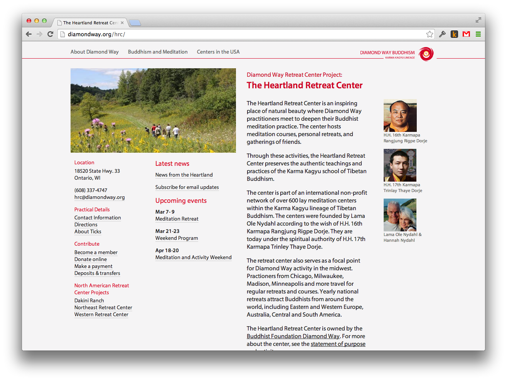
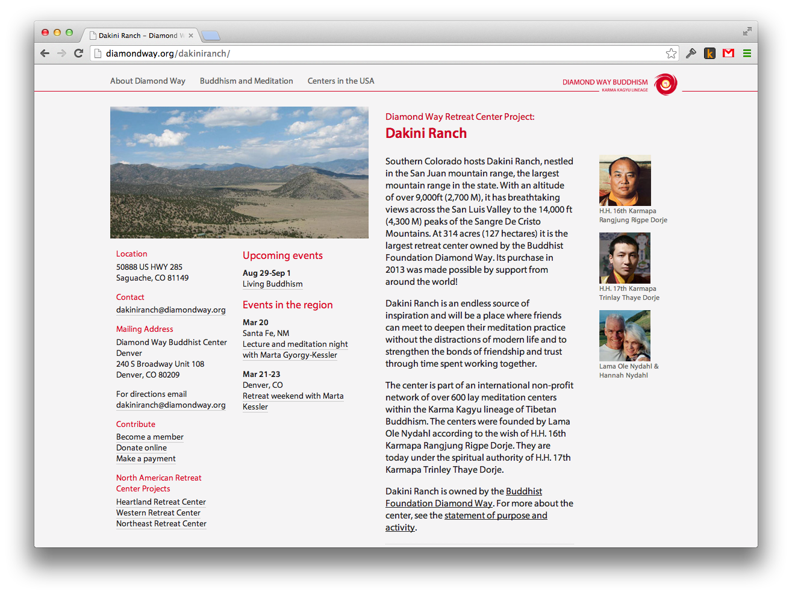
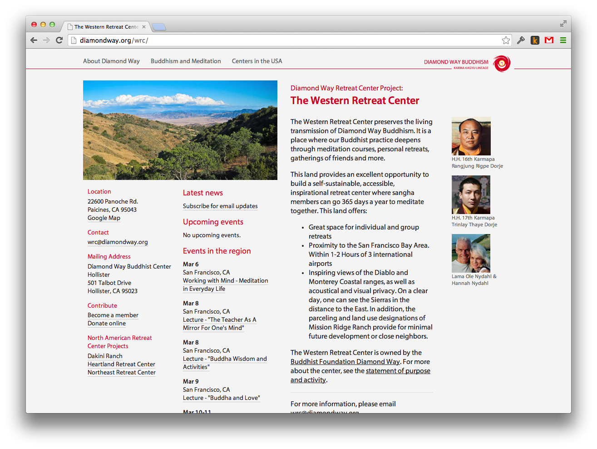
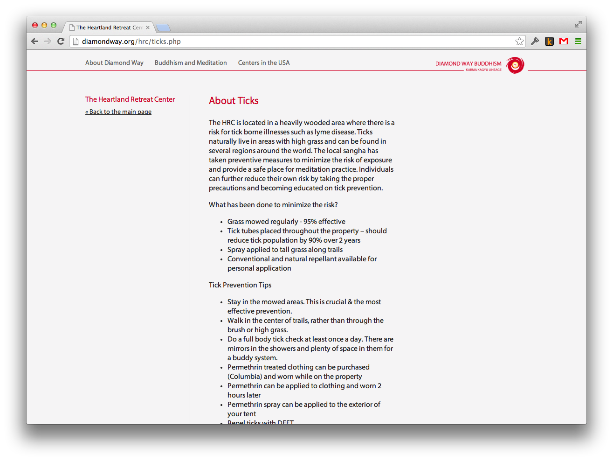
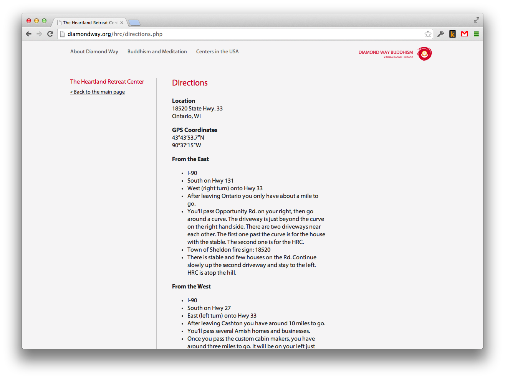
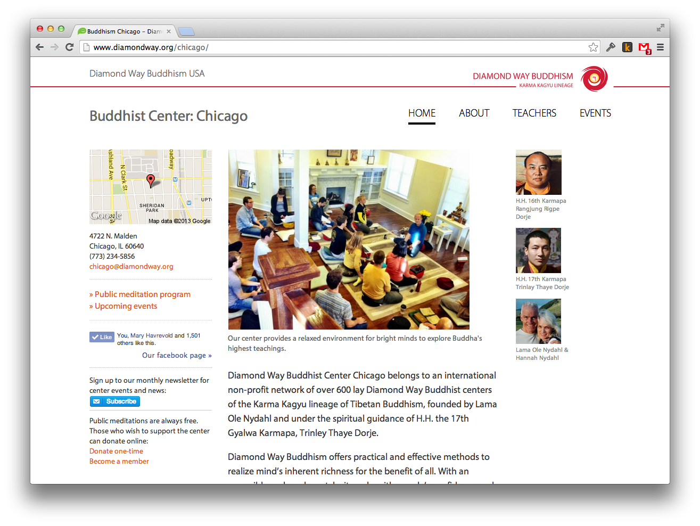
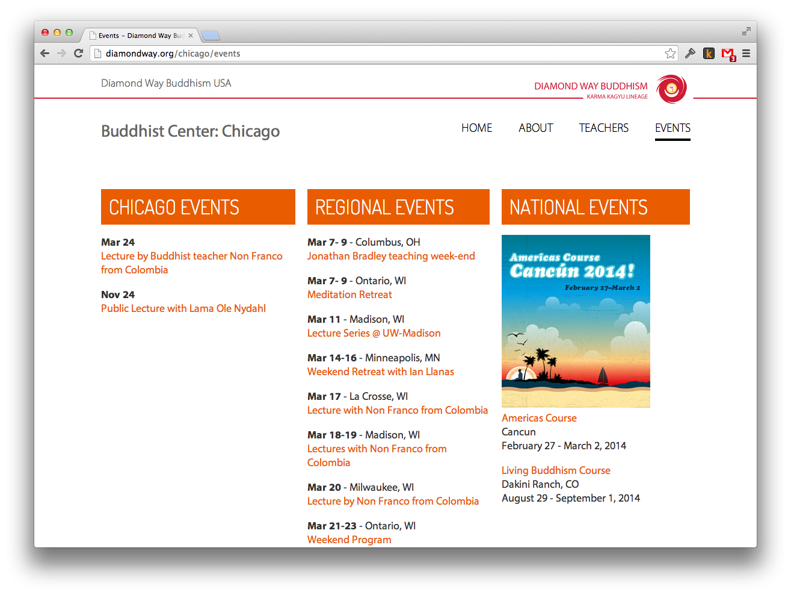

Hi friends,
Here is how one simple template can generate multiple websites with very little code and no CMS backend. I'll use the example of retreat center websites in the US to illustrate.
Here are three retreat center websites. Each site displays upcoming events via Firewheel. They appear under "Upcoming events" and "Events in the region" in the middle column.
  Each website has its own directory. It can include whatever pages and assets it needs. The template doesn't have an opinion about that.
index.php provies a few variables and calls to the home page template to render at the bottom:
The home page template lives in /var/www/html/template/retreat_center/. Notice how it expects a few variables, including an ID for looking up Firewheel events.
Sub pages (aka child pages) are handled in the same way. There are is no rule specifying which sub pages are allowed. Each page that wants to use the template provides some variables and calls to the template to render.
For example, the HRC needs to provide information about ticks. There is a ticks.php file in the hrc directory. It calls to the subpage template to render itself:
Here is the general sub page template that lives in /var/www/html/template/retreat_center/subpage.php:
The result looks like this:
Similarly, pages for directions, bank information, etc are easily generated:
We use a similar approach for center websites in the US. In this case, we built a bit more machinery to pull center data from JSON files and populate the templates. But the principle and benefits are the same. The core idea is to keep a loose connection between the template and the websites and rely on outside services for database-backed CMS functions.
 Hope this illustrates the approach I have been talking about. Please get in touch if you have more questions.
— Ryan